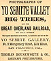

){kind=link}

|
 The visitor to this State [California] will hardly wish to leave it until he has visited the wonderful and the The grandest scenery on the American continent, if not in the world, is to be seen in the Valley of the Yo Semite (pronounced Yo Sem-i-te; by the Indians, Yo Ham-i-te). This valley was first discovered by white men in March, 1851, by Major Savage. It is about 8 miles long, and from one-half to a mile in width. The Merced river enters the head of the valley by a series of waterfalls, which, combined with the perpendicular granite walls which rise on either side from 2,000 to 6,000 feet above the green valley and sparkling waters beneath, presents a scene of beauty and magnificence unsurpassed, except possibly in childhood's fairy dreams. Here is majesty! enchanting! awe inspiring! indescribable! The loft cloud-capped waterfalls and mirrored lakes, the towering perpendicular granite cliffs and fearful chasms, strike the beholder with a wondering admiration impossible to describe. We have often desired to take our readers with us, in a pen and pencil description of this most remarkablevalley, and the "Big Trees," but in view of our limited space, the magnitude of the undertaking, together with our conscious inability to do justice to the subject . . . To those of our readers who desire further information, we recommend "Scenes of Wonder and Curiosity in California," by J. M. Hutchings, of Yo Semite. . . . The world-renowned Houseworth, of San Francisco, will have a branch house and an artist in Yo Semite Valley, who will photograph visitors in connection with the falls and the wonderful scenery. We bespeak for the enterprise a universal support; it is just what is wanted. |